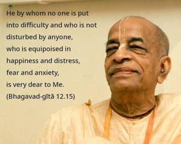
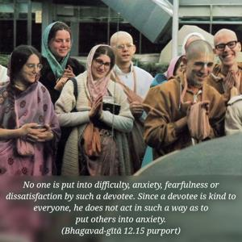
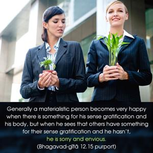

He by whom no one is put into difficulty and who is not disturbed by anyone, who is equipoised in happiness and distress, fear and anxiety, is very dear to Me.



A few of a devotee’s qualifications are further being described. No one is put into difficulty, anxiety, fearfulness or dissatisfaction by such a devotee. Since a devotee is kind to everyone, he does not act in such a way as to put others into anxiety. At the same time, if others try to put a devotee into anxiety, he is not disturbed. It is by the grace of the Lord that he is so practiced that he is not disturbed by any outward disturbance. Actually because a devotee is always engrossed in Kṛṣṇa consciousness and engaged in devotional service, such material circumstances cannot move him. Generally a materialistic person becomes very happy when there is something for his sense gratification and his body, but when he sees that others have something for their sense gratification and he hasn’t, he is sorry and envious. When he is expecting some retaliation from an enemy, he is in a state of fear, and when he cannot successfully execute something he becomes dejected. A devotee who is always transcendental to all these disturbances is very dear to Kṛṣṇa.